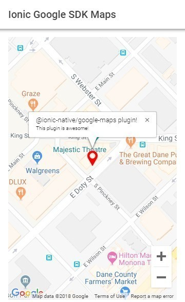

<ion-header>
  <ion-toolbar>
    <ion-title>Mapa</ion-title>
    <ion-buttons slot="end">
      <ion-icon (click)="closeMap()" name="close-outline" class="close-button"></ion-icon>
    </ion-buttons>
  </ion-toolbar>
</ion-header>

<ion-content>
  
  <ion-button expand="block" (click)="closeMap()">Confirmar Ubicación</ion-button>
</ion-content>
